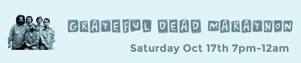

|
|
|
|
Welcome to KGNU's Fall Edition of our quarterly newsletter. This issue features news about the Fall Membership Drive and our Iceland Trip Giveaway, Pie R Squared, and upcoming events.
A few times a year, KGNU will hit you with a quick update about a few fun things that are going on at the station, both behind the scenes and on the air. KGNU is all about participation - so send us a note to let us know you what you think at newsletter@kgnu.org.
|
|
|
|
| |
|
|
|
Fall Membership Drive: Oct. 7th - 18th
Support KGNU and Enter to Win a Trip to Iceland
KGNU's Fall 2015 Membership Drive runs from Wednesday, October 7th, to Sunday afternoon, October 18th. Most of the money it takes to operate KGNU comes from listeners like you! Now it is even easier to donate online. Thank you!
When you become a new member or renew your membership KGNU will automatically enter you into a drawing to win an unforgettable trip to Iceland (valued at $3,000). Our sustaining SOLR members who make monthly electronic contributions to KGNU through their bank will be automatically enrolled in the drawing. Full details of the trip are available here.
No purchase or other consideration necessary to enter. Void where prohibited. Must be 18 years or older to enter. To enter without becoming a new or renewing KGNU Listener-Member, mail your name, address, phone number and email address to KGNU, 4700 Walnut Street, Boulder, CO 80301, attention: Iceland Drawing. One entry per person.
As part of KGNU´s most ambitious drive yet, we've prepared many special guests, our first ever Power Challenges (tune in for the details), and loads more.
If you would like to match contributions during your favorite show with a challenge grant during the drive, please contact Nikki at nikki@kgnu.org and let her know how to mention you on-air.
|
|
|
|
| |
|
|
|
Some great things to listen out for during the KGNU Fall Membership Drive
News and Public Affairs Programming
Brigitte Mars will join us live on air on Wednesday October 7th from 8.35-9.30am for a special pledge drive bumper edition of Naturally. Brigitte, a world renowned herbalist, has been sharing her knowledge of natural remedies with KGNU listeners for over 20 years. Brigitte will talk about her new book The Home Reference to Holistic Health & Healing.
On Connections October 9th from 8:30 to 9:30am, host Duncan Campbell will have a very special guest live on the line as he interviews bestselling author Don Miguel Ruiz about the launching of his latest and very personal book The Toltec Art of Life and Death. Stay tuned for details about a very amazing KGNU Special Event that we will be hosting on November 5th with Don Miguel Ruiz at Su Teatro in Denver.
On Tuesday October 13th, from 6-7pm, on Hemispheres, Joe Richey brings us the words of the Dali Lama from his visit to Naropa's Spirituality in Education Conference in 1997. For listeners who are disappointed that they won't get to see the Dali Lama in person as planned in October, enjoy hearing his words of wisdom from his last visit to the area.
On Thursday October 15th from 6-7pm on It's the Economy, best-selling financial writer Gillian Tett talks with KGNU's Claudia Cragg about her new book The Silo Effect.
On the KGNU Music Scene

Break out those tie dyes, let your hair down, fire up the old Type II (VW Bus), The Wheel keeps turning and KGNU's Grateful Dead Special will be on Saturday October 17th from 7pm til that Midnight Hour. We´ll bring you a transcendental five hours of rare Grateful Dead performances hosted by Chris O'Riley.
Tune in to The Morning Sound Alternative Monday October 12th from 9:30am to noon. Joanne and Sam will explore the breadth of Aretha Franklin's music and her effect on the social scene of the times. We´ll dedicate this MSA to highlighting music from inspirational female musicians who made an impact on both the industry and the public during these changing times - including R&B, Soul, Gospel and Funk.
These great programs will be the mere icing on the cake to Music Programming that KGNU has scheduled for you during our Fall Membership Drive. So don´t miss out.
|
|
|
|
| |
|
|
|
Many More Happenings at KGNU
KGNU and Denver Public Library's Visual Audio Club
Join KGNU Radio and Youth on Record at the Denver Public Library Byers Branch on Saturday Oct 17th from 2-3:30pm for "The Visual Audio Club" multimedia series combining video presentation, live performance, and panel discussion. This workshop explores global Hip-Hop and the Immigrant Experience through a video mixtape of global Hip-Hop, and music and poetry by international student artists from Youth on Record.
[ Pie r squared art here ]
KGNU Presents: Mouse's Pie R Square Dance
Break out the pie pans and dancing shoes, it's time for Mouse's Pie R Square Dance, Sunday, November 8th, from 2 to 5 PM at the Boulder American Legion Hall at 4760 28th St, Boulder, CO 80301
The event is a benefit for KGNU and honors Mouse Bradshaw, our beloved long-time Membership Director who passed away in 2007 shortly after retiring, and for other revered KGNU community members who have passed on.
There will be plenty of pie, ice cream, coffee and tea, lots and music and old-time dancing. All the dances will be easy and taught first; no partner or experience required.
Tickets will be available at the door the day of the event - $15 for adults (children under 12 free) or $10 if you bring a pie.
Boulder American legion Hall, Sun 11/8 at 2:00pm
Tickets can be purchased at piersquaredance.brownpapertickets.com
Don Miguel Ruiz: November 5th from 7 to 9pm
KGNU is organizing a very special event on November 5th at Su Teatro in Denver with Don Miguel Ruiz, the renowned bestselling author of the Four Agreements, as he presents his latest book, The Toltec Art of Life and Death.
[[ Cover of the book and or photo of Don Miguel…. I have that for you ]]
"It's the ultimate vision quest: nine weeks in a coma following a heart attack….This is a powerful look into the metaphysical life of a spiritual teacher. It provides insight into ancient Toltec wisdom that is seldom available in written form, or to the uninitiated." --Anna Jedrziewski, Retailing Insight.
Watch for updates and information on ticket sales and event details on the KGNU website.
That's the Day it All Changed: An Immigrant Oral History Project
Presented by KGNU Community Radio and the Denver Public Library's New Americans Project, That’s the Day it All Changed is an immigrant oral history project seeking to capture the immigrant experience of New Americans who have now come to be a part of the greater metro Denver area. This project invites immigrants, refugees, and asylum seekers to record their stories and talk about the moments that capture their immigrant experience. These stories will be archived and aired on KGNU Radio’s Morning Magazine Program. Recording sessions will take place on Thursdays 5:30 - 7:30 pm, Oct 1 - Nov 12, at the Byers Branch Library. If you’re interested in participating, or for more information, contact Yolanda 720-865-0160.
KGNU Tidbits: Strange Hobbies
Recently, 76 year old Tore, a retired officer in the Norwegian Army Signal Corps and radio enthusiast contacted KGNU about his hobby.
"As many others I have a hobby – perhaps a very strange hobby (there are many of them). I do collect identifications of US radio stations in the AM Radio Band as they are heard on air here in Norway.
"In September I and three other radio enthusiasts visited the north of Norway. The north of Norway is a very favorable location with polar nights and a short cut route across the Arctic. To pick up these very weak long-distance radio signals we use very long antenna - up to 1800 feet.
"On the 27th of September at 10:00 PM in Colorado I managed to catch the signals from AM 1390 - KGNU.
Listen to what KGNU´s 1390 AM signal sounds like in the Artic.
|
|
|
|
|